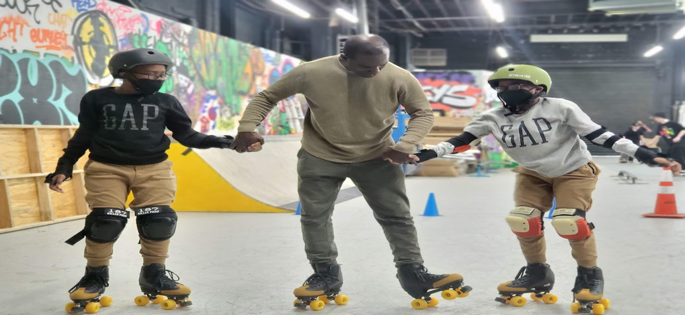
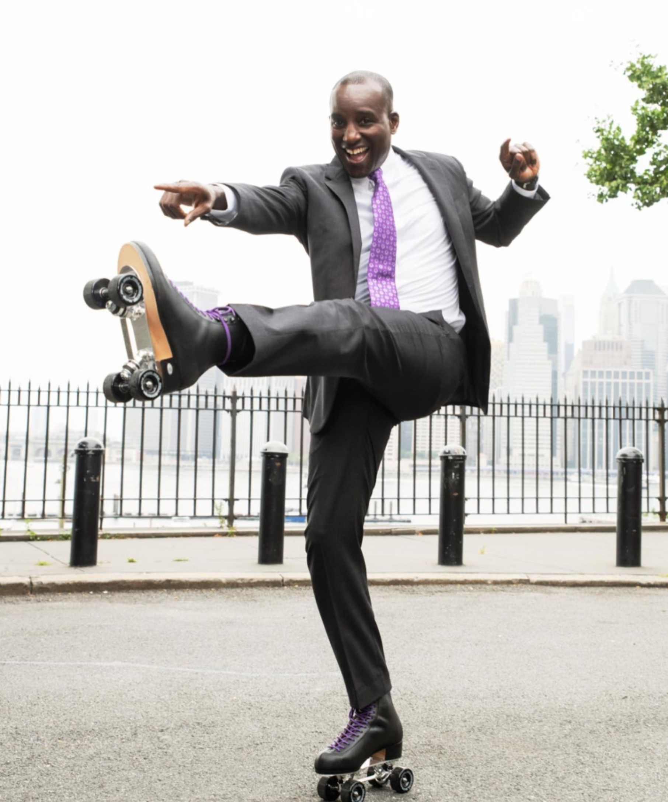

David Isaac, CEO/President of Blue Skate LLC, is a member of Kiwanis International and Skate Instructor's Association with over thirty-five years of experience within the roller-skating industry. He is recognized globally for his unique teaching style and special bond he establishes with his students. David Isaac had the opportunity to teach hundreds of skaters from around the world during his "Skate Love Festival 2021" workshop in Barcelona, Spain. He is equally recognized among the local communities in the USA skating world.
David Isaac continues to work as a professional independent information technology contractor for global banks, brokerage firms, advertising, hospitals, IT Construction firms, and other information technology firms for more than twenty-five years. His educational background includes an Associates Degree in Business Administration, Bachelor's Degree in Computer Science, and Double Masters Degrees in Information Technology/Information Systems, and Project Management.
Blue Skate LLC is one of the New York City mentorships or sponsors in the public and/or private sector for the New York City Department of Education's (NYCDOE) external learning program. Participation in activities at this mentorship for credit toward graduation is authorized as an official part of the NYCDOE.
In collaboration with the NYCDOE, NYC Parks Department, Millennium Development, Chaya Skates, and Substance Skatepark. Blue Skate LLC offers mentorship and coaching to students of all ages. Blue Skate's mission is to give back to the community from a roller-skating perspective: sharing knowledge, wisdom and love to our youth, at the same time building strong, active, lifelong learners. We are dedicated to shaping lives by promoting physical and mental health, and hygiene. Our focus is on the safety, and well-being of all, whether it is teaching how to get up gracefully after every fall, or in life.
